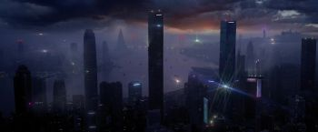
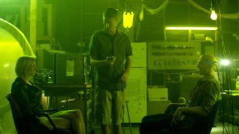
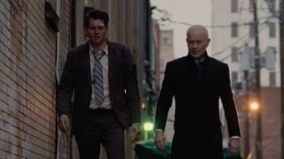
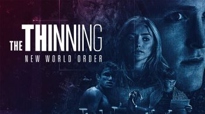
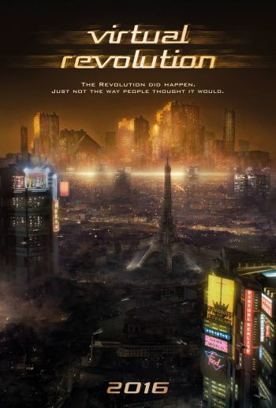
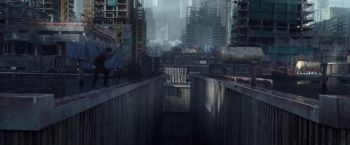
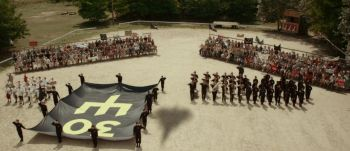
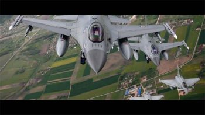
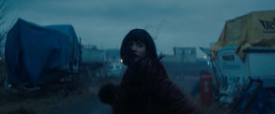

Антиутопия или дистопия (англ. dystopia, словослияние от dysfunction — «дисфункция», и utopia) — жанровая разновидность в художественной литературе, описывающая государство, в котором возобладали негативные тенденции развития (в некоторых случаях описывается не отдельное государство, а мир в целом). Антиутопия является полной противоположностью утопии.
Отличия антиутопии от утопии:
Антиутопия является логическим развитием утопии и формально также может быть отнесена к этому направлению. Однако, если классическая утопия концентрируется на демонстрации позитивных черт описанного в произведении общественного устройства, то антиутопия стремится выявить его негативные черты. Важной особенностью утопии является её статичность, в то время как для антиутопии характерны попытки рассмотреть возможности развития описанных социальных устройств (как правило — в сторону нарастания негативных тенденций, что нередко приводит к кризису и обвалу). Таким образом, антиутопия работает обычно с более сложными социальными моделями.
Советским литературоведением антиутопия воспринималась в целом отрицательно. Например, в «Философском словаре» (4-е изд., 1981) в статье «Утопия и антиутопия» было сказано: «В антиутопии, как правило, выражается кризис исторической надежды, объявляется бессмысленной революционная борьба, подчёркивается неустранимость социального зла; наука и техника рассматриваются не как сила, способствующая решению глобальных проблем, построению справедливого социального порядка, а как враждебное культуре средство порабощения человека». Такой подход был во многом продиктован тем, что советская философия воспринимала социальную реальность СССР если не как реализовавшуюся утопию, то как общество, владеющее теорией создания идеального строя (теория построения коммунизма). Поэтому любая антиутопия неизбежно воспринималась как сомнение в правильности этой теории, что в то время считалось неприемлемой точкой зрения. Антиутопии, которые исследовали негативные возможности развития капиталистического общества, напротив, всячески приветствовались, однако антиутопиями их называть избегали, взамен давая условное жанровое определение «роман-предупреждение» или «социальная фантастика». Именно на таком крайне идеологизированном мнении основано определение антиутопии, данное Константином Мзареуловым в его книге «Фантастика. Общий курс»: «…утопия и антиутопия: идеальный коммунизм и погибающий капитализм в первом случае сменяется на коммунистический ад и буржуазное процветание во втором».
Наиболее последовательно тезис о различии «реакционной» антиутопии и «прогрессивного» романа-предупреждения разработали Евгений Брандис и Владимир Дмитревский. Вслед за ними его приняли и многие другие критики. Впрочем, такой влиятельный историк фантастики, как Юлий Кагарлицкий, такого различия не принимает, и даже об Оруэлле, также как о Замятине и Хаксли, пишет вполне нейтрально и объективно. На 10 лет позже с ним согласился крупный социолог и партийный чиновник (в то время сотрудник аппарата ЦК КПСС, в перестройку помощник генсека) Георгий Шахназаров.
«Поступь хаоса» (англ. Chaos Walking) — американский фантастический приключенческий фильм режиссёра Дага Лаймана. Главные роли в нём исполнили Том Холланд и Дейзи Ридли. Фильм снят по мотивам первой книги Патрика Несса «Поступь хаоса». Премьера фильма состоялась 5 марта 2021 года.
«Создатель» (англ. The Creator) — американский научно-фантастический фильм режиссёра Гарета Эдвардса, который написал сценарий в соавторстве с Крисом Вайцем. Главные роли в фильме исполнили Джон Дэвид Вашингтон, Джемма Чан и Кен Ватанабе. В фильме также снимались Стерджилл Симпсон, Эллисон Дженни и Мадлен Юна Войлз (кинодебют). Cюжет, действие которого разворачивается в будущем, затрагивает тему войны между человеческой расой и силами искусственного интеллекта (ИИ) и рассказывает о бывшем агенте спецназа, завербованным армией США, чтобы выследить и убить «Создателя», который разработал таинственное оружие, способное положить конец войне, уничтожив само человечество. Главному герою предстоит сделать выбор, на чьей он стороне, после того как узнает, что на самом деле представляет собой это оружие.
Работа над фильмом началась в ноябре 2019 года, когда Эдвардс подписал контракт на режиссуру и написание сценария научно-фантастического проекта без названия для New Regency, о котором было официально объявлено в феврале 2020 года. Источником вдохновения для этого фильма были следующие картины "Апокалипсис сегодня" (1979), "Baraka" (1992), "Бегущий по лезвию" (1982), "Akira" (1988), "Человек дождя" (1988), "Хит" (1984), "Инопланетянин" (1982) и "Бумажная луна" (1973). Первоначально он назывался "Настоящая любовь", но затем был изменен на его нынешнее название. Съемки начались 17 января 2022 года и завершились 30 мая 2022 года.
Премьера «Создателя» состоялась на «Фестивале Фантастики» 26 сентября 2023 года, а 29 сентября была выпущена в широкий прокат в Соединенных Штатах и Европе студией 20th Century Studios.
Фильм получил в целом положительные отзывы критиков, многие из которых хвалили его визуальные эффекты, режиссуру, исполнение и подход к сюжету, хотя некоторые критиковали сценарий. В премьерный уикэнд фильм заработал 32,4 миллионов долларов при бюджете в 80 миллионов долларов.

Expired (alternatively titled Loveland in other countries) is a 2022 Australian independent science fiction film directed by Ivan Sen and starring Ryan Kwanten, Hugo Weaving and Jillian Nguyen.
«Судная ночь навсегда» (англ. The Forever Purge, досл.: «Вечная чистка») — фильм ужасов, пятый во франшизе «Судная ночь». В США фильм вышел 2 июля 2021 года. В России фильм вышел 1 июля 2021 года.

AKA:
Movie: Listening
Storyline: A team of genius-but-broke grad students invent mind-reading technology that destroys their lives and threatens the future of free will itself.
Genres: Drama, Sci-Fi, Thriller
Actor: Thomas Stroppel, Artie Ahr, Amber Marie Bollinger
Director: A.K. Strom
Country: USA, Cambodia
Duration: 100 min
Release: September 11, 2015 (United States)
Next Exit is a 2022 American science fiction comedy-drama film written and directed by Mali Elfman in her directorial debut. It stars Katie Parker, Rahul Kohli, Rose McIver, Karen Gillan, Tongayi Chirisa, and Diva Zappa. It premiered at the Tribeca Festival on June 10, 2022, is scheduled to be released in the United States in November 2022, by Magnet Releasing.
«Идеальное создание» (англ. Perfect Creature) — вампирский фильм режиссёра Гленна Стэндринга, снятый в 2006 году. Стиль картины близок к стимпанку.
«Поселенцы» (англ. Settlers) — британский научно-фантастический фильм, премьера которого состоялась в июне 2021 года.

The Shift is a 2023 American Christian science fiction thriller film written and directed by Brock Heasley and starring Kristoffer Polaha, Neal McDonough, Elizabeth Tabish, Rose Reid, John Billingsley, Paras Patel, Jordan Alexandra and Sean Astin. It is a loose adaptation of the Book of Job.
The film was released in theaters on December 1, 2023, to mixed reviews from critics.

The Thinning: New World Order is a 2018 American social science fiction thriller web film and the sequel to the 2016 film The Thinning. As with the first film, the movie was directed by Michael J. Gallagher and stars Logan Paul as a young man struggling against a dystopian future in which population control is enforced through a school aptitude test. The film released to YouTube Premium after being briefly shelved due to controversies surrounding its star, Logan Paul. It was generally panned by critics, with its excessive focus on main character Blake as well as lack of interesting themes highlighted as reasons of dislike.

Virtual Revolution (also known as 2047: Virtual Revolution) is a 2016 independent cyberpunk film directed and written by Guy-Roger Duvert in his directorial debut, and starring Mike Dopud, Jane Badler, Jochen Hägele and Maximilien Poullein. The film is set in a dystopian Neo Paris in which people have embraced virtual reality completely.

«Тайна 7 сестёр» (англ. Seven Sisters, также англ. What Happened to Monday, дословно — „Что случилось с Понедельник“) — фильм-антиутопия 2017 года, написанная Максом Боткиным и Керри Уильямсон, режиссёром которого является Томми Виркола. В главных ролях Нуми Рапас, Гленн Клоуз и Уиллем Дефо. Дистрибьютором фильма выступила компания Netflix, которая выпустила фильм 18 августа 2017 года. В России премьера состоялась 31 августа.
Премьера фильма состоялась на Кинофестивале в Локарно в 2017 году.

The White King is a 2016 British science fiction-drama film written and directed by Alex Helfrecht and Jörg Tittel. It is an adaptation of the novel of the same name written by György Dragomán and follows Djata (Lorenzo Allchurch) growing up in a dictatorship, without access to the rest of the world, while dealing with persecution against him and his parents by the government. It had its world premiere at the Edinburgh International Film Festival and its international premiere at the Tallinn Black Nights Film Festival.

Movie: World War Four
Storyline: A series of escalating incidents around the world lead to greater and greater conflict, placing the superpowers at one another's throats. Armies march, bombs rain down, soldiers storm the beaches. One family is caught up in the ever-growing conflict. Can they survive as total war is declared and nuclear weapons are unleashed?
Genres: Action, Sci-Fi, Thriller
Actor: Morgan Bradley, Graham Vincent, Frederick Dodson
Country: New Zealand, USA
Duration: 85 min
Release: 15 January 2019 (United States)
«Теорема Зеро» (англ. The Zero Theorem) — фантастический фильм Терри Гиллиама по сценарию Пэта Рашина. Включён в основной конкурс 70-го Венецианского кинофестиваля, где был показан 2 сентября 2013 года. Российская премьера состоялась 2 января 2014 года. 14 июня 2014 года Терри лично приехал в Москву, чтобы в Барвиха Luxury Village представить фильм зрителям.
Другие факты:
• До выхода фильм сравнивали с «Бразилией».
• Имя главного героя — Qohen Leth — это игра слов от Qoheleth (название Экклезиаста на иврите) и коэн (иудейский священник).
• В фильме представлены несколько пародийных культов, созданных обществом потребления в поисках смысла жизни, такие как «Церковь Бэтмена-искупителя» и «Церковь умного дизайна».
Критика: А. Гагинский, проводя сюжетные параллели, писал, что вместо второй «Бразилии» получился «Воображариум доктора Парнаса» в киберпанковских декорациях.

«Зона 414» (англ. Zone 414) — американский научно-фантастический триллер, снятый Эдвардом Бэрдом по сценарию Брайана Эдварда Хилла. В главных ролях: Гай Пирс, Матильда Лутц и Трэвис Фиммел.
Фильм компании Saban Films вышел в прокат в США 3 сентября 2021.